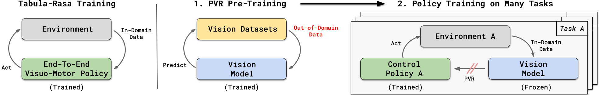

|
Exploration for RL References Long-Term Visitation Value for Deep Exploration in Sparse Reward Reinforcement Learning Interesting Object, Curious Agent: Learning Task-Agnostic Exploration Learning and Transfer of State Representations Towards a Near-Universal Representation for RL  In computer vision and natural language processing, recent advances have allowed to exploit massive amounts of data to pre-train perception models. These models can be successfully used "off-the-shelf" to solve many different downstream applications without any further training. On the contrary, in RL many algorithms still follow a "tabula-rasa" paradigm where the agent performs millions or even billions of in-domain interactions with the environment to learn task-specific visuo-motor policies from scratch. In a preliminary work presented at ICML, we studied well-known pre-trained vision models in the context of control. Are supervised models better than self-supervised models? What kind of invariances are relevant for the perception module of the control policy? Is the feature hierarchy of the vision layers important for control? By investigating these fundamental questions, we succeeded at making a single off-the-shelf vision model --trained on out-of-domain datasets-- to be competitive with or even outperform ground-truth features on all the four control domains. As efficient compact state features are hard to estimate in unstructured real-world environments and the agent needs to rely on raw vision input, our model can be extremely beneficial by dramatically reducing the data requirement and improving the policy performance. References The (Un)Surprising Effectiveness of Pre-Trained Vision Models for Control Actor-Critic References TD-Regularized Actor-Critic Methods Multi-Objective RL References Multi-objective Reinforcement Learning through Continuous Pareto Manifold Approximation |